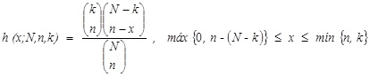

Distribucion hipergeometrica:
La distribucion de probabilidad hipergeometrica se encuentra estrechamente relacionada con la distribucion binomial,
pero difieren en dos puntos: en la distribucion hipergeometrica los ensayos no son independientes y la probabilidad
de exito varia de ensayo a ensayo (Anderson et. al., 2008). Esto significa que esta distribucion se basa en el muestreo sin reemplazo (Levin et. al., 2004).
Por su parte, Lind et. al., (2012) refiere que si se selecciona una muestra de una poblacion finita sin reemplazo
y si el tamanno de la muestra n es mayor que el 5% del tamanno de la poblacion N se aplica la distribucion hipergeometrica
para determinar la probabilidad de un numero especifico de exitos o fracasos.
En la distribucion de probabilidad de la variable aleatoria hipergeometrica X, el numero de exitos en una muestra aleatoria de tamanno n que se selecciona de N articulos,
en los que k que se denomina exito y N-k fracaso, es (Walpole et. al., 2012):
